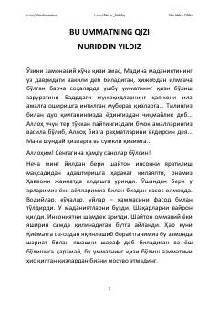

BUIslom yo'lida yashayotgan musulmon qizlarga bag'ishlangan ilhomli diniy asar.
Kitob musulmon ayollar va qizlarga bag'ishlangan bo'lib, islomiy hayot tarzini, hijob va shariat yo'lida yashashning ahamiyatini tushuntiradi. Muallif Nuriddin Yildiz bu ummatning qizi bo'lish mas'uliyati va sharafini tarixiy va diniy misollar orqali bayon etadi. Asarda Hadija, Maryam va Osiyo kabi buyuk ayollar ibrat sifatida keltiriladi.